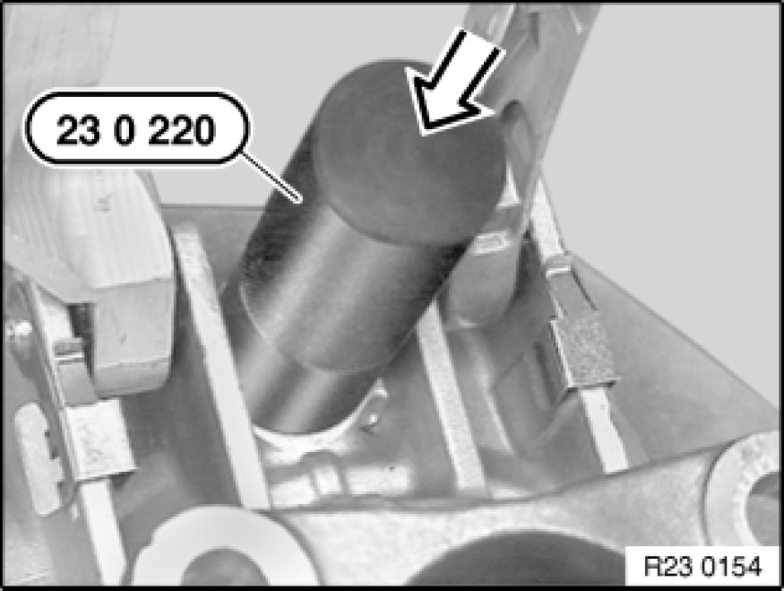

Replacing Radial Seal for Selector Shaft (GS6-37BZ)
23 12 088 - Replacing radial seal for selector shaft (GS6-37BZ)

Special tools required:
- 23 0 210 23 0 210 Extractor
- 23 0 220 23 0 220 Impact Bush

Important!
After completion of work, check transmission oil level Procedures.
Use only approved transmission oil.
Failure to comply with this instruction will result in serious damage to the transmission.

Necessary preliminary tasks:
- Remove transfer case Removing And Installing Transfer Case (ATC 400 X-Drive).
- Shift transmission into 2nd gear
Transmission extension N46
Release bolts and remove transmission extension (1).
Tightening torque 23 2 5AZ Transmission in General.
Lever retaining ring (1) out of groove with a small screwdriver.
Slide locking ring (1) towards rear.
Drive out cylinder pin (2).
Screw in special tool 23 0 210 23 0 210 Extractor until it is firmly connected with radial seal (1).
Pull out radial seal with special tool 23 0 210 23 0 210 Extractor.

Coat sealing lips of radial seal and selector shaft with transmission oil.
Drive in radial seal with special tool 23 0 220 23 0 220 Impact Bush.